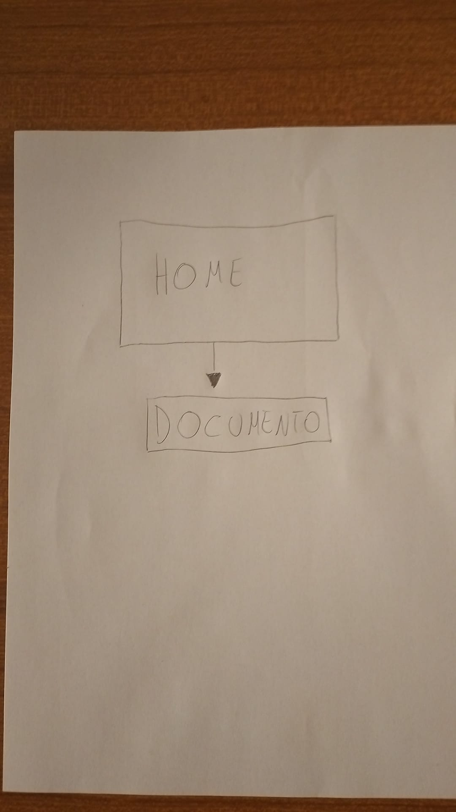
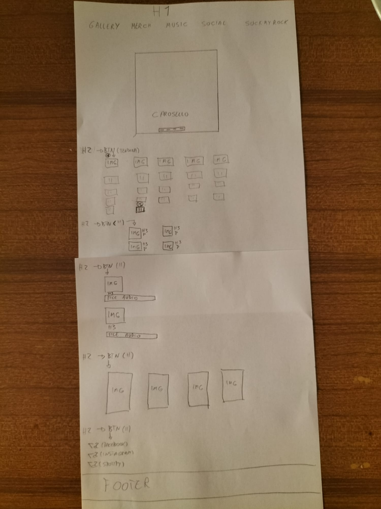

Questo sito nasce dall'esigenza di ampliare la presenza sul web dei Detmørke.
L'obbiettivo principale di questo sito è di semplificare il lavoro di promozione della band. Attraverso quest'unica piattaforma, intuitiva ed esteticamente coerente con l'identità artistica della progetto, gli utenti potranno trovare tutto ciò di cui hanno bisogno senza difficoltà.
Il target dei Detmørke sono tutti quegli appassionati di musica estrema che cercano tematiche serie trattate con grande leggerezza e tematiche leggere trattate con grande serietà. Insomma, si rivolgono a tutte quelle persone che, a prescindere dall'età, genere, nazionalità o ceto sociale, non si sentono accettate ma se ne fregano.
Il metal ormai esiste da 53 anni, perciò la competizione è decisamente alta. Tuttavia, non esiste nessun altro sito dedicato ai Detmørke, perciò questo sito si rivela essere, almeno a livello tematico, unico

 Il sito contiene tutto in un'unica pagina html fatta eccezione per la documentazione. Tutti i link della barra di navigazione sono cliccabili, cambiano colore passandoci sopra col mouse e rinviano a dei menù a tendina suddivisi tematicamente. Il carosello è automatico ma ed ho deciso di dare la possibilità di cambiare immagine a piacimento dell'utente cliccando su una delle quattro icone ialle posizionate in basso al centro. Nel footer ho inserito il link di rimando alla documentazione
Ho utilizzato come Font principale la "Blackwood-Castle-Shadow" in quanto già da tre anni è utilizzato dalla band per tutte le sue attività di promozione (Cartelloni, stickers, abbigliamento, etc..). Per i titoli delle canzoni nella sezione musica e per i nomi degli articoli (e relativi prezzi) ho utilizzato invece la font"Arial". Caratteristici della band sono anche i colori Nero, Giallo e Bianco, scelti come colori principali per le scritte, ad eccezione dei titoli delle canzoni nella sezione musica (Rosso) e del Documento nel footer (Blu). Ho inoltre utilizzato diverse fotografie (di proprietà della band) scattate durante concerti e sessioni di registrazione. Tutte le altre immagini, compresa quella posta come sfondo, sono state realizzate dal cantante della band, Antonio Pitzalis, in arte "Nick Moosette". inoltre ho deciso di includere nel sito la possibilità di ascoltare due canzoni gratuitamente senza l'uutilizze di piattaforme di streaming esterne.
-Html5; linguaggio di markup -Css3; applicatore di fogli di stile -Adobe color; scelta dei colori -Sublime text2; editor di scrittura -Bootstrap; riferimento per template -GitHub; pubblicazione sito
Come obbiettivo mi sono posto di raggiungere almeno 30 like al post sulla pagina instagram